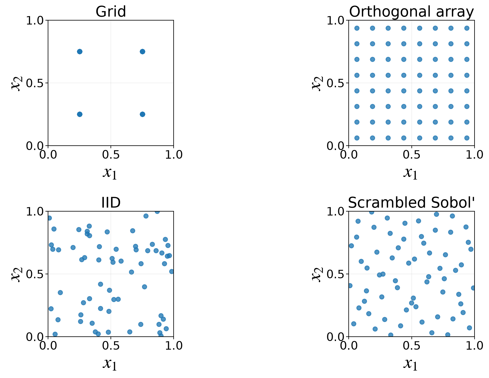

MATH 565 — Fall 2026
Introduction
August 22, 2026
What is Monte Carlo?

Foundation
Methods
Practice
Probability
Statistics
Analysis
Linear
Algebra
Algebra
Computer
Science
Science
Domain
Knowledge
Knowledge
(Quasi-)Random
Number Generation
Number Generation
Low
Discrepancy
Discrepancy
Estimation
Pseudorandom
Numbers
Numbers
Error
Assessment
Assessment
Discrepancy
Measures
Measures
Variance
Reduction
Reduction
Importance
Sampling
Sampling
Markov Chain
Monte Carlo
Monte Carlo
Multilevel
Monte Carlo
Monte Carlo
Stochastic
Optimization
Optimization
Uncertainty
Quantification
Quantification
Quantitative
Finance
Finance
Density
Estimation
Estimation
Statistical
Inference
Inference
Bayesian
Computation
Computation
Data-Driven
Error Bounds
Error Bounds
Software
Monte Carlo
Tree Search
Tree Search
High-Performance
Computing
Computing
AI Assistance
Collaboration
& Community
& Community
Why is there uncertainty?
Probability
J. Craven McGinty, As Forecasts Go, You Can Bet on Monte Carlo, Wall Street Journal, August 12, 2016
- Finance: market forces often modeled by stochastic processes driven by Brownian motion
- Engineering: system parameter variability modeled, for example, by Gaussian processes
- Image rendering: a finite sample must stand in for all possible rays
- Bayesian inference: the posterior probability distribution combines prior information and data
- Neural networks: not every direction in parameter space can be searched
- Queues: customer arrival and service times vary
Are we there yet?
Practice
A visit to a friend requires
- a \(5\)-minute walk to the train
- waiting for a train that arrives every \(20\) minutes
- a \(30\)-minute train ride
- a taxi that is waiting with probability \(0.2\)
- otherwise a taxi wait with mean \(10\) minutes
- a \(12\)-minute taxi ride
How long should you allow for the trip?
What modeling assumptions are needed?
Probability Review
Probability
- Random variables and distributions
- Moments of random variables
- Binomial distribution
- Exponential distribution
- Multivariate normal or Gaussian distribution
Probability
Random variables and distributions
Probability
Let \(Y:\Omega\to\mathcal{Y}\subseteq\reals\) be a random variable
For \(A\subseteq\mathcal{Y}\), \(\Prob(Y\in A)\) is the probability of the event \(\{\omega\in\Omega:Y(\omega)\in A\}\)
\[\begin{align*} F \text{ is the }\alerttext{cumulative distribution function}\text{, } F(y)&:=\Prob(Y\le y), \; y\in\mathcal{Y}, \quad\text{right-continuous}\\ Q \text{ is the }\alerttext{quantile function}\text{, } Q(u)&:=\inf\{y\in\mathcal{Y}:F(y)\ge u\}, \; 0<u<1, \quad\text{left-continuous}\\ & = F^{-1}(u) \text{ if $F$ is continuous and strictly increasing} \\ \Ex[g(Y)]&:=\int_{\mathcal{Y}}g(y)\,\dif F(y) \end{align*}\]
Discrete
Probability mass function (PMF), \(\varrho\)
\[\begin{gather*} \varrho(y):=\Prob(Y=y) \\ \Ex[g(Y)] =\sum_{y\in\mathcal{Y}}g(y)\varrho(y) \end{gather*}\]
Absolutely continuous
Probability density function (PDF), \(\varrho\)
\[\begin{gather*} \varrho(y):=F'(y)\quad\text{almost everywhere}\\ \Ex[g(Y)] =\int_{\mathcal{Y}}g(y)\varrho(y)\,\dif y \end{gather*}\]
Moments of random variables
Probability
\[\begin{align*} \mu & :=\Ex(Y) \text{is the }\alerttext{mean}\text{ of }Y \\ \med(Y) & := Q(0.5) \\ \sigma^2 & :=\var(Y) =\Ex\bigl[(Y-\mu)^2\bigr] \overset{\exstar}{=} \Ex(Y^2) - \bigl[\Ex(Y)]^2 \text{ is the }\alerttext{variance}\text{ of } Y \\ \sigma & \text{ is the }\alerttext{standard deviation}\text{ of } Y \\ \cov(\vY) & :=\bigl( \Ex[(Y_j-\mu_j)(Y_k-\mu_k)] \bigr)_{j,k=1}^{d} \\ & \text{ is the }\alerttext{covariance matrix}\text{ of the $d$-dimensional random vector } \vY \end{align*}\]
\(\exstar\) Assuming \(\Ex(Y^2)<\infty\), show that \(\displaystyle \mu = \argmin_m \Ex\bigl[ (Y-m)^2 \bigr]\)
\(\exstar\) Show that \(\displaystyle \med(Y) \in \argmin_m \Ex \lvert Y-m \rvert\)
Medians may be nonunique
\(\exstar\) Show that \(\cov(\vY)\) is symmetric and has nonnegative eigenvalues
Binomial distribution
Probability
For \(Y\sim\Bin(n,p)\) (see scipy.stats.binom(n, p))
\[\begin{gather*} \varrho(y)=\Prob(Y=y) =\binom{n}{y}p^y(1-p)^{n-y} \qquad y=0,1,\ldots,n \\ F(y)=\sum_{j=0}^{ y}\binom{n}{j}p^j(1-p)^{n-j}, \qquad y=0,1,\ldots,n \\ Q(u)=\inf\{y\in\{0,\ldots,n\}:F(y)\ge u\} \quad 0<u<1 \quad \text{no simple formula} \\ \Ex(Y)=np \qquad \var(Y)=np(1-p) \end{gather*}\]
The Bernoulli distribution, \(\Bern(p)\), is the case \(n=1\) \[\begin{gather*} \varrho(y)=\Prob(Y=y) =p^y(1-p)^{1-y} \qquad y=0,1 \\ \Ex(Y)=p \qquad \var(Y)=p(1-p) \end{gather*}\]
Exponential distribution
Probability
Models a memoryless waiting time
For \(Y\sim\Exp(\lambda)\) (see scipy.stats.expon(loc=0, scale=1/lambda))
\[\begin{gather*} \varrho(y)= \lambda \me^{-\lambda y}, \quad 0 \le y < \infty \\ F(y)= 1-\me^{-\lambda y}, \quad 0 \le y < \infty \\ Q(u) \overset{\exstar}{=} -\frac{\log(1-u)}{\lambda} \quad 0 < u < 1 \\ \Ex(Y)=\frac{1}{\lambda} \\ \var(Y)=\frac{1}{\lambda^2} \end{gather*}\]
Multivariate normal or Gaussian distribution
Probability
Used in finance and uncertainty quantification (see scipy.stats.multivariate_normal(mean=mu, cov=Sigma))
\[ \vY\sim\Norm(\vmu,\mSigma) \]
where \(\vmu\) is the mean vector and \(\mSigma\succ 0\) is a positive-definite covariance matrix
\[ \varrho(\vy) =\frac{1}{(2\pi)^{d/2}\abs{\mSigma}^{1/2}} \exp\left( -\frac{1}{2}(\vy-\vmu)^{\mathsf T} \mSigma^{-1}(\vy-\vmu) \right), \qquad \vy \in \reals^d \]
Samples and Estimates
Statistics
Estimation
Sampling schemes on \([0,1]^6\)
Pseudorandom
Numbers
Numbers
Low
Discrepancy
Discrepancy
Each design has \(n=64\) points; compare how its \(x_1\)–\(x_2\) projection fills the unit square
Sampling
Statistics
Estimation
Normally, we want something more than \(\vX_0, \vX_1, \ldots \sim \Unif[0,1]^d\); let
\(Y\) be a random variable, often \(Y=f(\vX)\)
\(Y_0,\ldots,Y_{n-1}\) be a sample—not necessarily random or IID
\[\begin{align*} \hmu_n & :=\frac{1}{n}\sum_{i=0}^{n-1}Y_i \quad \text{is the }\alerttext{sample mean}\\ \hsigma_n^2 & :=\frac{1}{n-1}\sum_{i=0}^{n-1}(Y_i-\hmu_n)^2 \quad \text{is the }\alerttext{sample variance}\\ \end{align*}\]
Mean squared error, bias, and variance
Statistics
Estimation
Let \(\Theta\) estimate a scalar population parameter \(\theta\) \[\begin{align*} \bias(\Theta) &:= \Ex(\Theta) - \theta \quad \alerttext{unbiased means zero bias} \\ \mse(\Theta) &:= \Ex\bigl[ \bigl(\Theta - \theta \bigr)^2 \bigr] \quad \text{is the }\alerttext{mean squared error}\\ & \overset{\exstar}{=} [\bias(\Theta)]^2 + \var(\Theta) \end{align*}\]
Under random sampling
Statistics
Estimation
Suppose \(Y_0,Y_1,\ldots\) have the same distribution as \(Y\), where \(\Ex(Y)=\mu\) and \(\var(Y)=\sigma^2\). Then \[ \Ex(\hmu_n)=\mu \quad \text{$\hmu_n$ is an }\alerttext{unbiased}\text{ estimator of }\mu \] If \(Y_0,Y_1,\ldots\) are also uncorrelated \[\begin{align*} \Ex(\hsigma_n^2)&=\sigma^2 \quad \text{$\hsigma_n^2$ is an }\alerttext{unbiased}\text{ estimator of }\sigma^2 \\ \mse(\hmu_n) &:=\Ex\left[(\mu-\hmu_n)^2\right] =\frac{\sigma^2}{n} \\ \rmse(\hmu_n)& =\frac{\sigma}{\sqrt{n}} \end{align*}\]
Central Limit Theorem
Probability
Statistics
If \(Y_0,Y_1,\ldots\IIDsim Y\) and \(0<\sigma^2<\infty\) then
\[ \frac{\hmu_n-\mu}{\sigma/\sqrt{n}} \dto\Norm(0,1) \qquad\text{as }n\to\infty \]
For large \(n\)
\[ \hmu_n\appxsim \Norm\left(\mu,\frac{\sigma^2}{n}\right) \]
Monte Carlo error for a sample mean typically decreases like \(n^{-1/2}\)
Computational counterparts
Statistics
Estimation
| Quantity | Python tool |
|---|---|
| Mean | np.mean(data) |
| Variance | np.var(data, ddof=1) |
| Empirical CDF | statsmodels.distributions.empirical_distribution.ECDF(data) |
| Empirical quantile | np.quantile(data, probabilities) |
| Histogram | np.histogram(data, bins="auto") |
| Kernel density estimate | scipy.stats.gaussian_kde(data) |
Are we there yet? Revisited
Statistics
Estimation
For the travel-time model
- model each uncertain waiting time
- generate independent trip times \(Y_0,\ldots,Y_{n-1}\)
- estimate the mean and relevant upper quantiles
- report Monte Carlo uncertainty with the estimates
The question “How long should I allow?” is usually a quantile question, not only a mean question
Conditioning
Probability
Estimation
Conditional probability
Probability
For discrete random variables \(Y,Z\), suppose \(\Prob(Y=y)>0\) and \(\Prob(Z=z)>0\)
\[ \Prob(Y=y\mid Z=z) =\frac{\Prob(Y=y,Z=z)}{\Prob(Z=z)} =\frac{\Prob(Z=z\mid Y=y)\Prob(Y=y)} {\Prob(Z=z)} \]
The second equality is Bayes’ theorem
If a joint density exists and \(\varrho_Z(z)>0\)
\[ \varrho_{Y\mid Z}(y\mid z)=\frac{\varrho_{Y,Z}(y,z)}{\varrho_Z(z)} \]
Laws of total expectation and variance
Probability
\[\begin{align*} \Ex(Y)&=\Ex_Z\bigl[\Ex(Y\mid Z)\bigr] \\ \var(Y) &=\Ex_Z\bigl[\var(Y\mid Z)\bigr] +\var_Z\bigl(\Ex(Y\mid Z)\bigr) \end{align*}\]
Conditioning separates variation within a fixed \(Z\) from variation in the conditional mean across values of \(Z\)
Conditional Monte Carlo
Probability
Estimation
Let \(Y=f(X_1,\ldots,X_d)\) and \(Z=(X_2,\ldots,X_d)\)
If
\[ g(Z):=\Ex(Y\mid Z) \]
is available analytically
\[ \mu=\Ex(Y)=\Ex_Z[g(Z)] \qquad \var_Z(g(Z)) \overset{\exstar}{\le} \var(Y) \]
Sampling \(g(Z)\) instead of \(Y\) can reduce variance
If the conditional density \(h(y,z):=\varrho_{Y\mid Z}(y\mid z)\) is available analytically
\[ \varrho_Y(y)=\Ex_Z[h(y,Z)] \]
so a probability density can itself be expressed as an expectation
Big Ideas
Probability
Statistics
Estimation
- Use sample quantities to estimate properties of a random variable whose distribution is difficult to obtain directly
- Targets include
- means
- (co-)variances
- probability mass or density functions
- cumulative distribution functions
- quantiles
- For means, the CLT provides interval estimates that quantify Monte Carlo uncertainty
- Other properties often begin with point estimates—one approximate value for each target
- Conditioning can turn a difficult random quantity into a lower-variance expectation
Next: Generating Samples
(Quasi-)Random
Number Generation
Number Generation
Most simulations begin with
\[ \vU\sim\Unif[0,1]^d \]
and construct
\[ \vX=T(\vU) \]
with the distribution required by the model
- Where do uniform samples come from?
- How do we transform them to a target distribution?
- How do we generate dependent random vectors and stochastic processes?
- Can more even coverage improve Monte Carlo estimates?
Next: turn uniform inputs into samples from the models we need